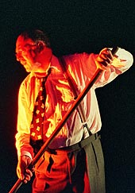

|
|
| Home |
| The company |
| Newsletter |
| Edinburgh Fringe |
| What the press say |
| What you say |
NewsletterSpringtime 2015 Perhaps I am easily pleased? But that’s not true. I am rather difficult to please. Maybe I lack the perspective to judge the work? Now that could be true. I have been living with this for the last two years. But today, I’m not too bothered about the context in which my work pleases me. I’m just very happy that it does. Two years ago I was enjoying a feast in Tbilisi with the Georgian director, Levan Tsuladze and after numerous toasts things were getting a bit out of hand. I’m all for things getting out of hand. I’d rather have two birds in the bush than one in my hand. We were wading through gallons of Georgian wine when Levan toasted the opening scene of our adaptation of Captain Corelli’s Mandolin. It is an adaptation for five actors and a large cast of puppets and Levan directed it. The opening scene deserves to be toasted. I play Dr Iannis and sitting centre stage beside my wife’s grave I tell my wife that our daughter will make a terrible wife. Why? Because I have taught her to read and write. Not only Greek. Italian too. On the word ‘Dante’ – the music (composed by Vakhtang Kakhidze, Chief Conductor of the Tbilisi Symphony Orchestra) starts up and the puppets enter – Cephalonian villagers in a candlelit procession carrying the sick to the shrine of St Gerasimos. I still get goose bumps when I think about it. A magical moment. So Levan and I are toasting this beautiful scene when a shadow crosses Levan’s face. He is remembering a stage adaptation of The Divine Comedy which he had seen in Verona. It was directed by a ‘brother’ – a fellow director for whom Levan had huge respect. Levan was almost in tears as he told me it was ‘terrible.’ I wanted to give him a big hug and console him but I couldn’t get my arms all the way around him. Levan’s a big man. I whispered in his ear. ‘You and me – we’ll do it.’ His mood changed. Just like that. And with his tearful smile my fate was sealed. I began the two year journey that has brought me here. I read several of the translations. I tried reading it in Italian. I read some of the recent commentaries. More has been written about The Divine Comedy than can be read in one lifetime. I watched Professor Mazzotta’s Yale lectures. Levan and I make theatre for actors and puppets sharing the stage together. We did Corelli and we have done Platero and Me: Travels with a Donkey – an adaptation of Jimenez’s short stories with a puppet donkey. So here’s the idea. Our adaptation of The Divine Comedy will be staged with one actor and a large cast of puppets. Dante wrote himself into The Divine Comedy– the writer is the the main character in the poem – and the only one who is alive. Everyone else who inhabits Inferno, Purgatorio and Paradiso is dead. The dead have different rules. The dead don’t weigh anything. Dante does. And so on… And here’s a lovely thing… Dante doesn’t always get it right. Even though all his characters are dead Dante brings them to life so skillfully that the dead often behave as if they are alive. (Virgil cannot hug anyone because he is an insubstantial spirit but he can carry the living Dante on his back! A pedantic continuity person will find inconsistencies like that all over the poem.) There will be no continuity problems in our stage adaptation because the pilgrim is an actor and he’s alive. The dead are all puppets. Couldn’t be simpler. And here’s another lovely thing. The skillful Georgian puppet makers and puppeteers can make such vivid puppetry that will bring the dead to life. Today, I don’t know if my Georgian colleagues are going ahead with our adaptation or not. It is a very large scale production and there may not be a budget for this. So, in the meantime I have made another adaptation. This is the one I just finished about an hour ago. – it’s for one actor and a cast of imaginary puppets. A one-man show with imaginary puppets! How weird is that? I spoke to my friend, Philip Contini, who is the boss at Valvona & Crolla in Edinburgh – the deli from heaven which is our normal Edinburgh Fringe Venue and proposed my Divine Comedy for this year’s Edinburgh Fringe. I told him – it’s a one man show – it not only has no puppets it also has no music, no props, and it will run for two hours. He still decided to take it. Now, I am nearly 66 years old and although my best work is not behind me most of my life is. Making smart career moves is no longer on the agenda. I don’t think it ever was. But a one-man Divine Comedy delivered as a ‘stand-up’ with a running time of nearly two hours might look like an attempted suicide. (Mike! Don’t you understand that one man fringe shows run for an hour. Two hour theatre productions only ever happen in established auditoriums with comfy seats – not in fringe venues. Have you done any market research? Do you know what the potential audience is? How many people want to see The Divine Comedy. What makes you think it is more that zero?) You are allowed 40 words in the Fringe programme. It’s your main chance to find an audience. I thought of something along the lines of… ‘A Divine Comedy. An almost unabridged journey through Inferno, Purgatorio and Paradiso in search of Beatrice. Will Mike Maran’s adaptation be as blasphemous and offensive as Dante’s sublime poem? Will Mike get Dante’s girl? A mad flight of mesmerising medieval stand-up.’ That’s 41 words I may have to cut the word ‘sublime.’ Think of the top three writers in the history of Western civilization. Numbers one and two are Shakespeare and Dante or Dante and Shakespeare. Either way round. I don’t know who number three is. Petrarch? Chaucer? Cervantes? Goethe? Whoever it is they are so far behind I can’t see who it is. There will be plenty Shakespeare in Edinburgh this summer. There always is. And Dante? This year – yes! Let me tell you before I stop about the second best thing I ever wrote. It’s called Rhapsody in Green – about the life and work of John Muir – a Scot who emigrated to America where he is widely recognized as the the father of American National Parks and who inspired the last 100 years of environmental conservation. Our production goes on tour this spring and summer. The dates are elsewhere on this website. If it’s coming to a venue near you I do hope you’ll be able to catch up with us. The best thing? That’s my adaptation of The Divine Comedy which opens at The Edinburgh Festival in August. I do hope you’ll come. It may just be you and me. Ciao!
|
|  |